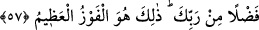
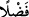

nikâhlamamaları gerekir.
Buradaki illâ’nın ba‘de yahut sivâ mânâsında olduğu da söylenmiştir. Şâyet, bu âyet
kabirde hayat ve ölüm olmadığına delildir, dersen, ben derim ki Allah Teâlâ buradaki
ölümden insanlar arasında bilinen ve alışılagelmiş olan ölüm cinsini murâd etmiştir.
Herkesçe bilinen ölüm bir takım sıkıntılardan uzak değildir. Kabirde dirilmeden sonra
tekrar ölmek ise meşhur ve bilinen ölümden daha hafiftir. el-Es’iletü’l-mukhame’de
böyle geçer.
Fakir (Bursevî) der ki: Âyetin delâletine göre ölüm var olan bir şeydir. Çünkü
tadılabilen bir şeydir. Bu durum, hissedip tadan birinin yenilip tadılacak bir şeyi
tatmasıdır. Çoğu âlimler ölümü hariçte bulunmayan, ölüyle kaim olmayan olarak kabul
ederler. Çünkü olmayan bir şeyin bir mahal ve mekâna ihtiyacı da olmaz. Bu durumun
tahkîki inşallah ileride gelecektir.
Âyete şöyle işârî bir mânâ verilmiştir: Cennet ehli mücâhede kılıcıyla nefis ve hevâyı
kırmaları ve şehvetleri terk etmeleri sâyesinde cennette nefis ölümünü tatmayacaklar,
sadece birinci ölümü tadacaklardır. Bu da ancak dünyâda en büyük cihâd olan nefis
mücâhedesinde sadâkat kılıcıyla nefsini öldürmekle mümkün olur. Nasıl ki var olmayan
şeye kılıç işlemezse, fânî olmuş bulunan nefse de kılıç ve ölüm işlemez. Çünkü insan iki
kere ölmez. Yine aynı şekilde birinci ölüm varlıktan önceki yokluktur. Hakîkî mânâda
var olduktan sonra hiç kimse ölümü ve sırf yokluğu tatmaz. Çünkü Allah Teâlâ varlığı
ona hîbe etmiştir ve Allah asla hîbesinden dönmez, çünkü buna ihtiyacı yoktur. Vahşî
hayvanların toprak olup kâfirlerin de bu vahşî hayvanlar gibi toprak olmayı temennî
edeceği konusu (Nebe, 78/40) ise tamamıyla yok olmak değil, âhiret toprağına ilhak
olmak demektir. Şöyle de denebilir: Aşağılık olan şeylerin varlıklarının Allah Teâlâ
nezdinde herhangi bir îtibârı yoktur. En iyisini Allah bilir.
“(Allah) onları cehennem azâbından korumuştur” Vikaye etmek bir şeyi onu rahatsız
edip ona zarar verecek şeylerden korumaktır. Yani Allah onları cehennemden korumuş;
cehennemi onlardan bertaraf etmiştir. Hak Teâlâ cennet ehlini gözetir ve cehennem
azâbını onlardan uzak tutar. Bu ifâdede uzaklık azâbına ve ayrılık cehennemine işâret
edilmektedir.
57. Rabbinden bir lutuf olarak (bu nîmetler kendilerine verilmiştir). İşte, o büyük
başarı budur.
Bu “
/fadlen” kelimesi mukadder bir fiille mef’ûl-i mutlak yahut hâl olmak üzere
mahallen mansûbdur. Yani müttakî kullara sözü edilen cennet nîmetleri ve cehennem
azâbından kurtuluş sırf Allah Teâlâ’nın lutuf ve ihsânı olarak verilmiştir, yoksa kulun
illetli ve zayıf amellerine karşılık olarak değil. Ehl-i sünnet bu âyet deliliyle şöyle